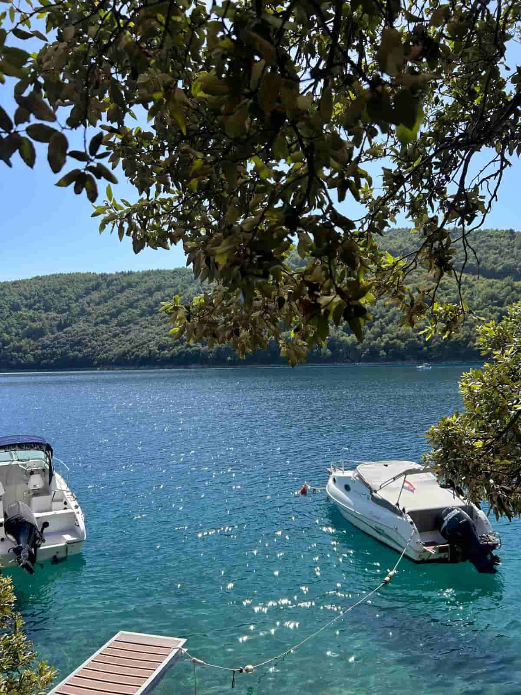
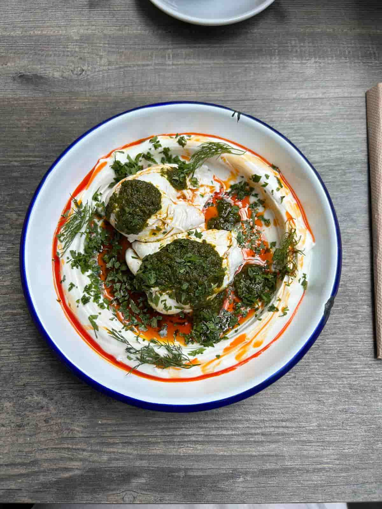
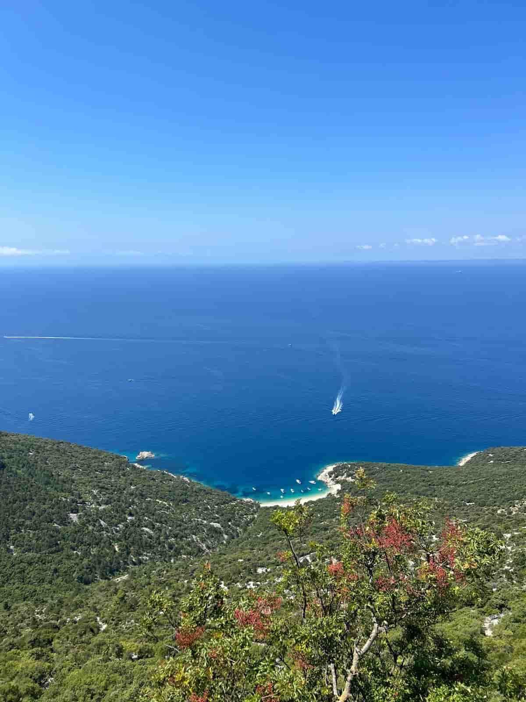
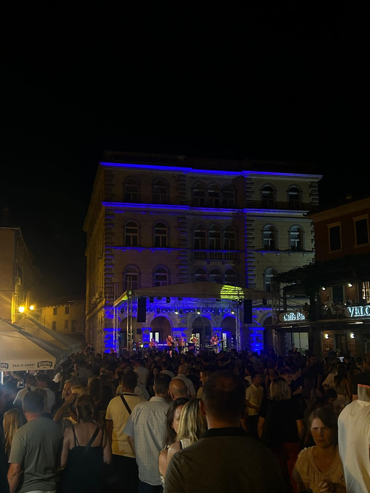

SPREMNI ZA NOVU PERSPEKTIVU?
Kontaktirajte nas i dogovorite fotografiranje već danas.
KONTAKTIRAJTE NAS
Profesionalna fotografija omogućuje da prikazujete trenutke i prostore u njihovom najboljem izdanju. Kroz pažljivo odabrane kadrove, osvjetljenje i kompoziciju stvaramo vizuale koji privlače pažnju i ostavljaju jak dojam.
Pravi kadar može istaknuti detalj, prenijeti emociju ili stvoriti novu vizualnu priču.
Svakom fotografiranju pristupamo s ciljem da pronađemo estetski i funkcionalno najbolji kut.
Stvaramo privlačne i apetitlih fotografije jela, pića i ambijenta restorana ili kafića.
Kroz detalje, teksture i prirodno svjetlo ističemo kvalitetu vaše ponude i gradimo vizualni identitet vašeg jelovnika i društvenih mreža.


Prikaz prostora, arhitekture, dizajna interijera i eksterijera.
Naglašavamo prostranost, estetiku i funkcionalnost nekretnina kako bismo ih prezentirali u najboljem izdanju za prodaju, najam ili promociju.
Spontano i profesionalno bilježimo ključne trenutke, atmosferu i emocije privatnih i poslovnih događaja.
Stvaramo trajnu uspomenu i kvalitetan vizualni materijal koji prenosi energiju vašeg Eventa.

Kontaktirajte nas i dogovorite fotografiranje već danas.
KONTAKTIRAJTE NAS